Copal Apps
Every program Copal offers, on shelves, with a picture, two sentences, its source and its status. An install is shown as a slideshow: the program arriving, its steps, and three bars.
copal-apps · copal-store · Super ⇧ C
The programs written for this desktop, the projects that live on it, and every program it offers, photographed running.
Small programs, each doing one job the desktop needed and nobody had written for Alpine. All of them are in the installer, and all are MIT licensed.
Every program Copal offers, on shelves, with a picture, two sentences, its source and its status. An install is shown as a slideshow: the program arriving, its steps, and three bars.
copal-apps · copal-store · Super ⇧ C
One script, eighteen stages, a playbook per program. It writes the card on the Mac, sets up the machine, and keeps a record of all of it.
copal · copal-prep.sh
The menu for the mouse, laid out the way Linux Mint's is: favourites, sections, search. Built from the programs the system already advertises, so a program installed a minute ago is already in it.
Super A
The menu for the keyboard: applications on one side, everything else on the other, in wofi on Wayland and jgmenu on X.
Super Z · Super D
One clipboard, one set of keys, in every window — X programs and Wayland ones alike, and in a virtual machine the Mac's clipboard too.
runs at login
The front door of the graphical session, and the bar that starts whichever shell the machine actually has: waybar today, the theme's own quickshell the day Alpine packages it.
runs at login
Several Copal machines, one console: a certificate authority, an mDNS beacon on each machine, and a console that sees and acts on the room.
copal fleet · stage 16 · orrery
Stage 7 clones the repositories you name into ~/code; these
are the ones this machine is used to make. Each is its own project, in its
own repository.
A GQ GMC-320 Plus Geiger counter on the desk, read from Alpine: two dials, a live chart and a log, from one or two tubes at once.
Rust · the instrument panel
An instrument panel and a process browser in one terminal window: the task manager for Copal's full install, one Rust crate with no dependencies.
Rust · the task manager
A stream stopped in a file and let go again: the .sstr
format, and ytq, Copal's download queue that watches the clipboard.
Rust · no dependencies
The Copal fleet's console: the wall, the seat, the museum interface, and the verbs that act on a room full of machines.
the fleet
The Royal Game of Ur for the Commodore Plus/4 — and playable in a browser, where a Plus/4 boots inside the page.
C and 6502 assembly · play it
A raytraced city built entirely of typeable characters, in real time, on a colour terminal and on a Commodore Plus/4 — with a taxi game inside it.
terminal · Plus/4
A whole adventure RPG in one HTML file: combat, a world map, quests, saves and eight acts of story, with no server and nothing to install.
one HTML file
Bird and sky capture for the Raspberry Pi HQ Camera.
Raspberry Pi · birdshot.org
Each picture below was taken on the bench by the same probe that checks a program starts: it launches the program on a spare workspace, waits for its window, gets past any first-run dialog, and photographs the screen. A program is listed only if it opened a window.
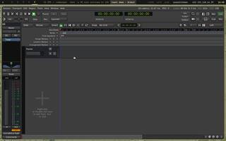


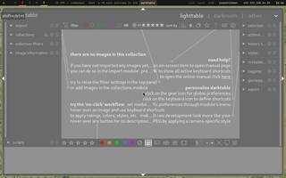
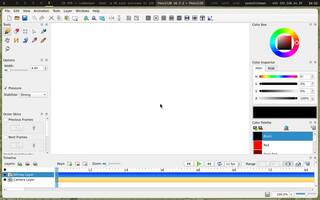


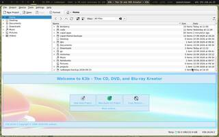


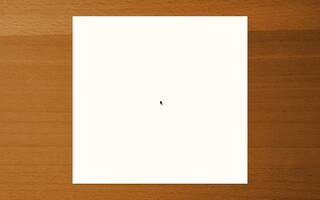


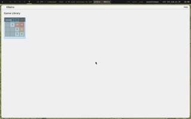


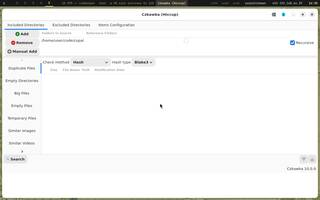


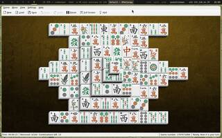
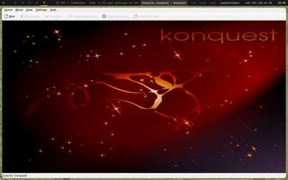
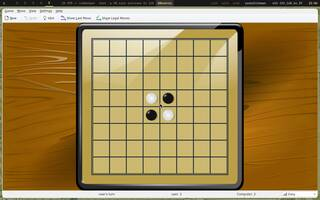
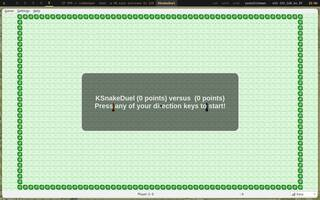
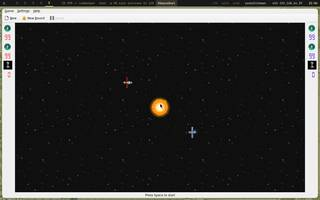
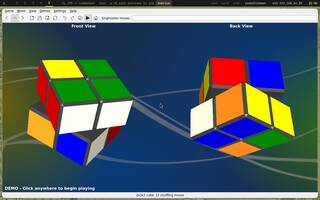


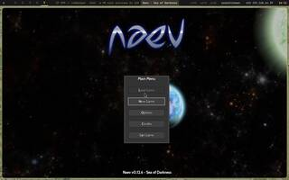


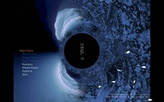


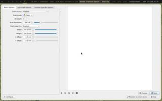
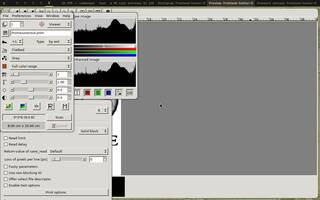


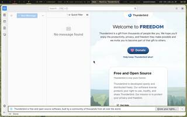


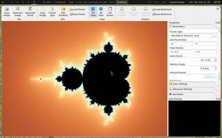


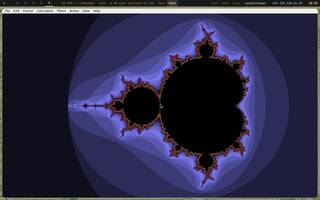